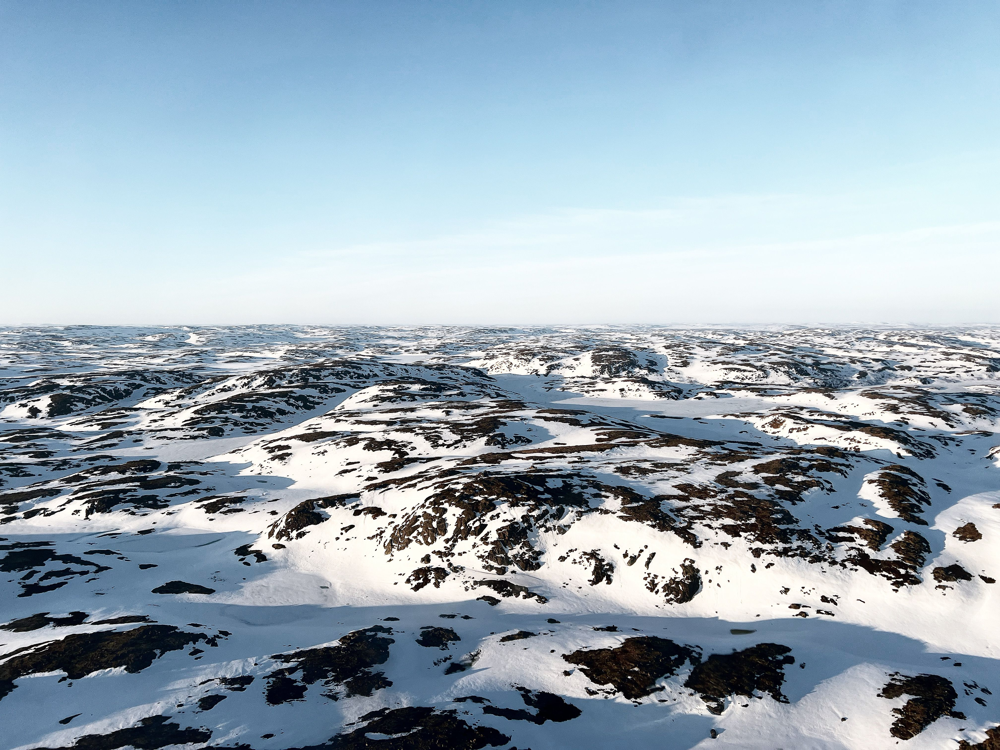
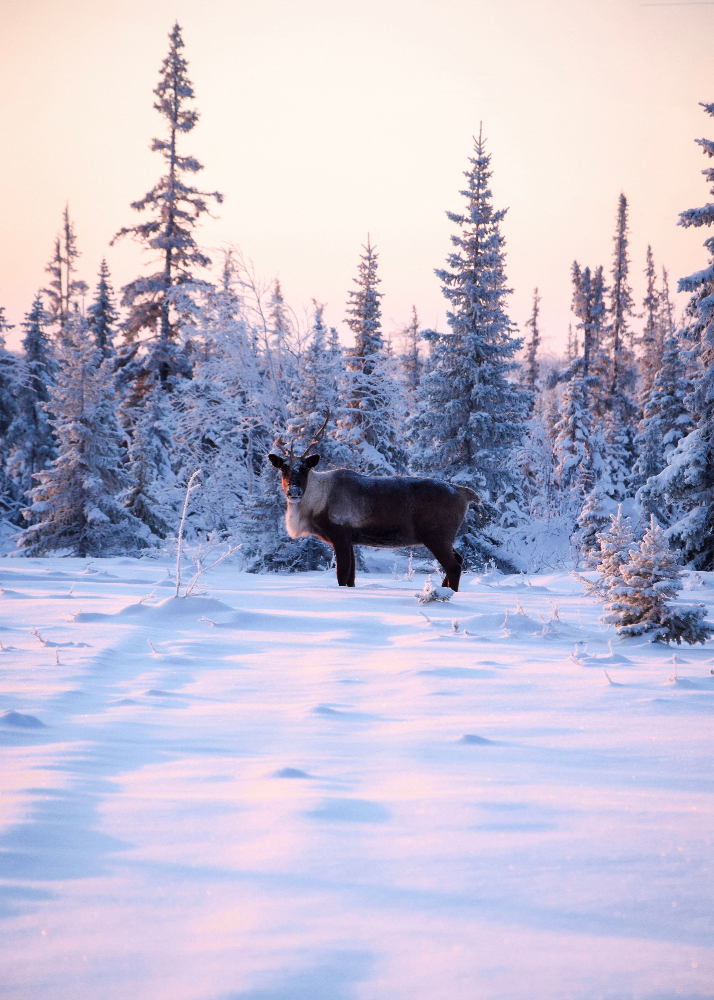

Explore resilient landscapes surviving sub-zero extremes, home to iconic ice-walkers, permafrost layers, and glacial wonders.

The Arctic tundra is one of the coldest and harshest biomes on the planet. Characterized by extremely low temperatures, short growing seasons, and a permanent layer of subsurface soil known as permafrost, tree growth is virtually impossible.
Despite these freezing conditions, the tundra supports a specialized network of hardy flora and fauna that have evolved ingenious physiological adaptations to withstand relentless winter blizzards and midnight sun summers.
For students studying global climate systems, the tundra serves as a critical atmospheric regulator. The frozen permafrost layer stores massive quantities of trapped carbon dioxide and methane. Protecting this frozen terrain prevents greenhouse gas releases that accelerate global warming.
Animals such as arctic foxes, polar bears, and migrating caribou demonstrate incredible survival mechanisms, showcasing the delicate balance required to thrive at the top of the world.

Essential scientific data points defining the Arctic tundra biome.
Average extreme cold baseline
Deep frozen subsoil depth
Mostly falling as light snow